Please note this page is currently WIP.
| Last updated: Exalt Version 5.13.0.0 (June 2025) |
|---|
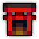 Music: Moonlight Village Music: Moonlight Village
|
| Dust Drops | ||
|---|---|---|
| 38-46 |
36-44 |
36-42 |
The Moonlight Village is an extremely dangerous dungeon that consists solely of an advanced and unconventional boss encounter, with a fishing minigame and an additional fight sometimes available at the end. This dungeon is one of the Exaltation dungeons, boosting either Life, Mana, or Attack depending on which boss was the last one in the battle (Genji, Kaguya, and Miko respectively).
The dungeon is a source of Greater Stat Potions, high-tier weapons, a large number of UT items, Onmyoji Ninja Set Shard, and the Concentrated Soul Fire. If players encounter the fishing mini-game, they can also earn additional rewards that double as stat boosters and Pet Food.
The dungeon portal is a guaranteed drop from the Ethereal Shrine, an encounter in the Realm. It also has a chance to drop from the Alluring Blossom and the Colossal Mantis.
| The Realm Eye says: |
|---|

The Moonlight Village is an old eastern fishing village, lying far away from the grasps of Oryx’s rule. What lies here may be the spiritual remnants of a long, bygone culture of exquisite dance. This village is not without its occupants - ethereal dancers of an ancient, and yet strangely recognizable art. Every night, a festival of remembrance is held to soothe any spirits that have wandered into the village. However, what you might not realize is that their form of dance may be far more lethal than it appears. |
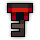 The Moonlight Village Key is available in the Nexus for 200 .
The Moonlight Village Guide is currently a work in progress.
The Moonlight Village has a predetermined, linear layout. Players will spawn and advance through a tutorial sequence (that can be skipped by a certain interaction), before facing the three dancers in the boss arena. Several hidden areas can be found in the dungeon, which provide unique interactions that may change certain parts of the dungeon.
A small clearing where Village Girl Umi greets players. She will guide them to the tutorial, as well as provide dialogue on various other interactions within the dungeon.
A long street where Umi explains the unique Lantern mechanics in the dungeon (detailed later) and prompts the player to engage in 3 increasingly difficult warmups to teach them the mechanic, where players must keep the lantern lit while avoiding a barrage from hostile spirits.
| Aesthetics | Damage | Condition effects | Speed (tiles/sec) | Range (tiles) | Comments |
|---|---|---|---|---|---|
| 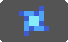 | 70 | Slowed for 5s | 0 | 0 | Shots hit multiple targets Ignores defense of target |
| 80 |  Exposed for 5s Exposed for 5s |
1.5 | 4.5 | Shots hit multiple targets | |
| 40 | Slowed for 3s | 0 - 2 | 8.8 | Shots hit multiple targets Ignores defense of target Acceleration: 10 tiles/sec2 after 2s Max. Speed: 2 tiles/sec |
After these three tutorials are cleared, Umi will give the players an option to initiate Leisurely mode, before directing them to the boss arena.
After the boss fight, players can return to the street, which will now have a gate surrounded by spirits, to find the three dancers resting, upon which they can talk to them and ask them questions.
By following a hidden path to the lower right of the spawn room, players can be teleported to a small area with a much harder version of the tutorial, consisting of three flames firing various shots inwards towards a clockwise-rotating lantern.
| Aesthetics | Damage | Condition effects | Speed (tiles/sec) | Range (tiles) | Comments |
|---|---|---|---|---|---|
| 120 | Slowed for 5s | 0 | 0 | Shots hit multiple targets Ignores defense of target |
|
| 100 | Exposed for 5s |
1.5 | 7 | Shots hit multiple targets Ignores defense of target |
|
| 70 | Slowed for 3s | 0 - 2.2 | 13.8 | Shots hit multiple targets Ignores defense of target Acceleration: 10 tiles/sec2 after 2s Max. Speed: 2.2 tiles/sec |
|
| 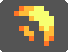 | 80 | 2.7 | 14 | Shots hit multiple targets Ignores defense of target |
Lighting this lantern for long enough will skip the tutorial phase. Players who completed the tutorial skip can touch the flame that spawns in the middle to teleport back to just outside of the arena. This notably also causes Umi to skip the dialogue option that activates Leisurely mode, making it impossible to activate if the tutorial has been skipped.
By following a hidden path to the left of the spawn room, players can be teleported to a small area with a golden bell, upon which Umi will ask the player if they want an extra challenge.
“I love the thrill of a challenge! Do you?”
(if the player replies yes) “I hope that you’re prepared for it…or it’ll hurt!”
“Now give the bell above the gate a strong whack before you walk through it!”
Following Umi’s instructions and attacking the bell will initiate Challenge Mode for the player, detailed further in the page. Interacting with the gate will send the player back to the spawn room, regardless of whether the bell was rung or not.
A plain, square arena where the bosses reside. Once the fight begins, all players will be teleported to the arena, and Ethereal Fog will surround the square, dealing massive damage and applying Sick and Silenced to players that try to flee the fight.
North of the arena. If Umi is found here, she’ll instruct players on how to play the fishing minigame and allow them to try it. By catching and presenting fish to Umi, she’ll reward players with special items.
To the far right of the arena. After the battle, Umi can occasionally be found here, where she can be talked to. Her three questions (and their respective answers) are below:
Q: “I was wondering, what kind of foods do you like to eat?”
A: Mushroom
Q: “Did you have a favorite dancer?”
A: Carosburg
Q: “What folktales do you know about?”
A: The Happy Prince
(Wait a few seconds before answering)
If a player answers the question she asks, Umi may ask if the player wants to see something interesting; saying yes will prompt players to return to the arena, where a secret boss encounter with Kitsune Umi will begin.
An area below the boss arena full of water. If the player completes the dungeon in Leisurely Mode there’s a chance that Village Girl Umi will appear there after the fight instead of at the fishing dock or the shrine, allowing the players to talk to her. If the player defeats Kitsune Umi, a stone path will reveal itself at the bottom right, leading the players to the Resting Grounds.
If Kitsune Umi is defeated, a stone path in the bottom right corner of the map will reveal itself. Following it will take the player to a clearing with a purple tree, under which Kitsune Umi will initially be asleep. Next to the tree are three graves, presumably belonging to the original mortal dancers.
TBA
The bosses of the dungeon cannot have their health depleted and do not take normal damage. During each phase, a meter will appear in the top left corner of the screen, displaying the name of the current attack and how close it is to finishing. The meter will passively increase over time, but can be greatly accelerated by completing certain objectives during each phase.
The three dancers will attack one at a time in a random order, with previously defeated dancers periodically aiding the other dancers in their Damage phases. The later a dancer is in the fight, the more attacks they will use before switching out. The first dancer will have one Damage phase and one Danmaku phase, the second and third will have two of each, and the final dancer will additionally have a Last Word at the very end, an extremely difficult Danmaku attack that gradually grows in ferocity. The extra boss, Kitsune Umi, will instead use 3 of each, followed by her own Last Word at the end.
Whenever the boss is vulnerable, simply attacking the boss will increase the rate at which the phase progresses, with more DPS meaning faster acceleration. More players will increase the amount of DPS needed to accelerate the phase by the same amount. During these phases, the boss will be Armor Broken.
Whenever the boss is invulnerable, players will have to seek out and stand near a Lantern to accelerate the phase, which moves in a preset pattern depending on the attack. Standing near the Lantern will also grant the player  Healing while purging
Healing while purging  Bleeding. The Lantern will accelerate the phase faster if players are able to constantly stand near it for a prolonged amount of time, indicated by it glowing brighter.
Bleeding. The Lantern will accelerate the phase faster if players are able to constantly stand near it for a prolonged amount of time, indicated by it glowing brighter.
The amount of players required to be standing near the lantern to accelerate the phase by the same amount will increase the more players there are. In order for the phase to be accelerated at all, a certain percentage of the total players must be near the Lantern at that point in time.
Every boss inflicts a specific “aura” during their Danmaku phases that permanently applies a debuff for the duration of the phase - Silenced and In Combat for Genji, Pet Stasis and In Combat for Kaguya, and Sick and Drought for Miko. During the Last Word and for all of Kitsune Umi’s Danmaku phases, all three auras will be applied simultaneously. However, at the end of a Danmaku phase, all players will be given 3 seconds of Healing and  Energized to help them recover.
Energized to help them recover.
The drop chances and amount of loot dropped at the end of the boss fight is proportional to the “performance” of the players during the battle (ie. more DPS during Damage phases, and more lantern following during Danmaku phases), and thus the speed at which the dungeon is completed. This is represented by the number of spirits that appear from the boss at the end of each phase. Spirits come in pairs, and up to 8 spirits can be obtained per phase, resulting in a theoretical maximum of 88 spirits from the main fight.
There’s four different “tiers” of loot the players can get, depending on the amount of spirits they’ve collected during the fight. The higher the tier, the better the loot and the higher chance for Umi to appear in the shrine.
The spirit thresholds for the loot tiers are as follows:
Note: You only need to damage Sage Genji during the dance for loot.
Despite the UTs being themed after individual dancers, the order of the dancers does not affect what loot will drop, although it will affect what Exaltation is provided after the clear. Note that Kitsune Umi has her own drop pool, and the chance of the option to fight her depends on what tier of loot the players obtained against the dancers, not the amount of spirits (e.g. collecting 58 and 76 spirits give you the same chance). Getting Tier 4 loot will guarantee getting the encounter.
If the player were to complete the dungeon while collecting 0 spirits, they’ll be rewarded with Tier 3 loot, and the Kitsune Umi encounter will be guaranteed to appear.
Since the Kitsune Umi fight has less total phases, the thresholds are different for her fight:
The Moonlight Village has two extra difficulties that can be selected through special interactions. These will change the quality and quantity of the drops.
The “Easy Mode” of the dungeon. Activated by consuming a Tofu Delicacy near Umi, which Umi will give out if players say “yes” when she asks if this is their first time at the festival. The Delicacy will make the boss fight easier by permanently granting Healing and a 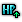 HP Boost (+150 HP) increase to all players, while also making it so each dancer will only use one Damage and one Danmaku phase each (with the Last Word still being at the end).
Leisurely Mode has its own tier loot thresholds (the same as the Kitsune Umi ones), considering that the maximum amount of spirits one can obtain is 56:
However, the drop rates and loot quality will decrease, the dungeon will not drop a Mark nor an Exaltation, and the Kitsune Umi encounter will not appear.
Additionally, in Leisurely Mode, the chance of getting the Kitsune Umi encounter is replaced with the chance of meeting Village Girl Umi at the fishing dock. Meaning that Fishing is not guaranteed in Leisurely Mode, and the higher the loot tier obtained, the higher the odds of getting Fishing are.
Activated by finding and hitting the bell in the Challenge Gate before starting the boss fight. In this mode, players will be permanently inflicted with Pet Stasis for the entire fight. However, this will also cause the player to receive an extra loot bag upon clearing the dungeon. Unlike Leisurely mode, this difficulty applies only for individual players that hit the bell, not the entire group.
If there was only one player in the dungeon, they are holding a completed book of The Night Prince, and they cleared the dance while collecting no spirits at all (ie. never attacking in Damage phases and never following the Lantern in Danmaku phases), the player will be able to initiate a harder version of the Umi fight after the main dance - Umi, Goddess of Revelry. This version of Umi has new dialogue, significantly harder attacks, and an additional phase at the very end of the fight. However, defeating her will provide an extra loot bag, which will always contain one T14 Weapon, Concentrated Soul Fire, and The Night Prince Unlocker. In addition, extra interactions and dialogue can be found in the Village proper after the fight, including a conversation with Kanayama, Goddess of the Forge at the shrine Umi used to be in.
After the dance is over, if players head north, there is a chance players will come across fishing. Players will be given Basic Fishing Rod inside a barrel next to Village Girl Umi
Fishing rods go in Accessory slots, and firing a weapon with fishing rod on will throw out a white particle effect similar to how Assassin’s poisons work, but will always be thrown 4 tiles away from the player, similar to how Divinity’s exalted beam works.
After Umi’s dialogue to tell the players to type “ready”, fishing will start when one of the players type “ready” in chat.
When it lands and doesn’t hit a puddle, it will show a “X” mark, indicating you missed. If you hit a puddle, it will either catch a fish or not. when it does catch a fish, it will simply show what you caught, and give you points. when it does not, it will show a splashing sprite, indicating that you did aim correctly, but had no luck.
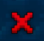 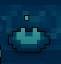
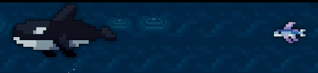
The “Fishing” stat in fishing rods affects the casting speed, the time it takes for the fishing rod to land, and the success rate of catching a fish.
Depending on how people do in fishing, Umi’s dialogue will change, signifying different loot table.
There are multiple grades depending on how much percentage player has filled inside the “Fishing!” gauge.
1: (0%–14%) “You barely caught anything… Maybe it was just your unlucky day.”
Most of the drops will consist of 1 Greater stat potion only.
2: (15%–24%) “I made a few small snacks with the fish you caught. Enjoy!”
There is a low chance for Intermediate Fishing Rod to drop.
3: (25%–34%) “You did pretty well! I hope you enjoy the meal.”
The droprate for Intermediate Fishing Rod increases, and you can also start getting Armor type white bags.
4: (35%–49%) “Wow, what a bountiful catch! You have great potential.”
There is a low chance for Expert Fishing Rod to drop, and drops from above all drop at higher chances.
5: (50%–69%) “I’m extremely impressed by your effort! I hope you enjoy my cooking!”
There is a low chance for Master Fishing Rod to drop.
6: (70%–94%) “You caught enough fish for a feast! Spectacular job!”
7: (+95%) “I haven’t seen such remarkable fishing skills in a long time. You truly are a master!”
Guaranteed chance of dropping the Fishing Award.
After 30 to 45 seconds, if the progress is below 20%, Village Girl Umi will start assisting the player with fishing until the progress reaches 25%.
| Item | Drops From |
|---|---|
| 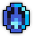 | |
| 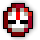 | Kitsune Umi |
   |
|
 |
Kitsune Umi |
| 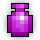 | Fishing with Village Girl Umi |
 |
|

|
|
 
|
Kitsune Umi |
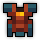 
|
|
  
|
|
| 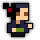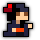 | |
 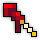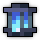 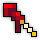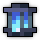
|
Kitsune Umi |
| 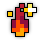 | Kitsune Umi |
| Kitsune Umi | |
| Umi, Goddess of Revelry | |
| 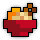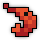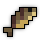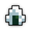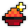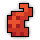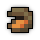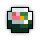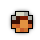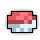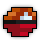 | Fishing with Village Girl Umi |
| 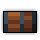 | Fishing with Village Girl Umi |
| 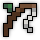 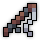 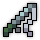 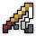 | Fishing with Village Girl Umi |
The Moonlight Village is part of the Epic Quest pool from The Tinkerer and has one associated quest.
| Name | Description | Items Needed | Reward |
|---|---|---|---|
| Moonlight Festival | Join in on the festivities at the Moonlight Village! | 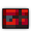 |
Equipment with Percentage Life Regeneration enchantments are especially powerful during this dungeon. Being able to quickly recover health during Danmaku phases while you are inflicted with Pet Stasis is invaluable.
Kitsune Umi is guaranteed to spawn at the shrine to the far right of the arena if you successfully obtain 0 spirits after the finale. You must avoid shooting the boss and standing near the lanterns to ensure you receive 0 spirits from each phase. This is usually only possible in solo or private groups.
This dungeon was added in Exalt Version 3.3.6.0 (Mar 2023).
As of Exalt Version 4.2.4.0 (July 2024), this dungeon now drops from the Alluring Blossom and the Colossal Mantis.
Before Exalt Version 5.11.0.0 (May 2025), dungeon completion gave 133-311  with 60% chance, 67-157
with 60% chance, 67-157  with 50% chance and 28-66
with 50% chance and 28-66  with 40% chance.
with 40% chance.
Before Exalt Version 5.12.0.0 (June 2025), dungeon completion gave 38-46  , 36-44
, 36-44  and 36-42
and 36-42  .
.
Before Exalt Version 5.13.0.0 (June 2025), dungeon completion gave 42-50  , 48-56
, 48-56  and 52-58
and 52-58  .
.
WIP


{kind=link}